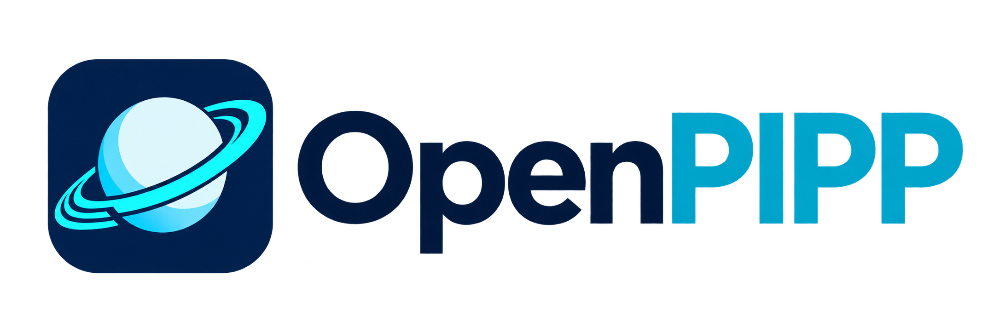

OPIPP is an independent, fully managed continuation of PIPP (Planetary Imaging PreProcessor). It reads the same captures, accepts the same command-line switches and produces the same output layout — but the code is new, readable C# that can keep evolving.
Runner results, parity comparisons and planning estimates are labelled separately. Only the parity cases are compared with the original binaries; the rest are managed tests, golden files and independent decodes.
| Evidence | What it establishes |
|---|---|
| 1446 managed tests | the managed engine follows the contracts in status.md; 2 skip in CI without the evaluation capture |
| Golden files | output matches committed native fixtures for the registered synthetic cases |
| Independent decodes | files are readable and numerically correct outside OPIPP's own readers |
| 27/27 parity | every registered comparison against the original engine matches; 2 differences are deliberate |
| CI | build, suite, documentation consistency and a packaged smoke convert pass on a clean runner |
0.3.0-alpha — field-rotation correction is now part of final-image integration. PIPP aligns by translation only, so a rotating capture — a handheld lunar video, or an alt-az mount without a derotator — blurs as the radius grows. OPIPP estimates a per-frame angle against frame 0, rotates bicubically about the image centre, crops to the rectangle every rotation fills, and finishes with a correlation offset. Edge sharpness gains 2.42x at 1.45 deg of rotation and 21.5x at 116 deg; a still sequence is byte-identical. See derotation. Release notes.
Integration has also been run on
real captures: Jupiter (2011 AVI, 2023 TIFF) and Saturn (2022, 8,984 frames), plus Moon and Mars
stills. Peak process memory is measured for every integration route, staging is owned by a run
directory, and a raw Bayer capture now tells you to debayer first (-db) instead of
guessing. See validation
and memory.
Release notes.
Weighted by how much of the product each area represents. The weights are a judgement call, published in the roadmap so they can be argued with. These are planning estimates, not measured reliability or an accuracy score.
Surface-feature tracking is exact on 23 of 30 frames of one real Saturn capture, and one pixel off on the rest. That result does not measure general tracking accuracy. Final-image stacking controls, disk-backed median and the other known gaps remain open.
Phases are closed only when a parity case or a test proves them.
| Phase | State | What it means |
|---|---|---|
| 1 · Drop-in parity | done | Output layout, numbering, logs, exit codes, -gui token stream |
| 2 · Remaining formats | done | BMP, Y8, GIF, colour SER, AVI including MJPEG |
| 3 · Calibration | done | Dark/flat/flat-dark masters in the engine's .tmp format |
| 4 · Selection, alignment, stacking | in progress | Selection and Core stacking tested; tracking, final-image controls and large median stacks remain open |
| 5 · Animation & long tail | done | -anim_*, WinJUPOS naming, legacy AVI, RAW switches |
| 6 · GUI parity | done | Fully managed — no native DLL required |
| 7 · Alpha build | done | Self-contained Windows build with GUI and CLI |
Port the engine's coarse search stage
(FUN_1400a7ec0) and re-enable the seed. Success criterion: the synthetic probe still
refuses content the original refuses, and the Saturn fixture reaches at least 28 of 30 frames.
SER, AVI (including MJPEG), FITS, TIFF, PNG, BMP and baseline DNG — decoded in managed code.
Debayer, calibrate with dark/flat masters, stretch, bin, resize, rotate, flip, mono or colour.
Quality ranking (three algorithms), planet detection with rejection reasons, centring, surface tracking, stacking.
TIFF, FITS, PNG, BMP, SER, AVI and animated GIF, in the original's numbered layout with matching logs.
The CLI speaks the same switches and the same stdin protocol as pipp_core.exe, so existing scripts and front-ends keep working.
GPLv3, no native dependencies, no vendored binaries — build it yourself from source.
Listed rather than hidden. If something here matters to your workflow, that is exactly the feedback worth sending.
II header; OPIPP writes spec-correct files.-aoi_crop — the original reads out of bounds; OPIPP clamps.This is early. The most useful thing you can send is a capture that fails, stalls or comes out worse than the original.
Attach the SER/AVI, the command line you used, and the log from <output>/logs/.
What do you do in PIPP that OPIPP makes awkward or impossible?
Run a job through both engines and diff the frames — the parity harness makes this mechanical.
PIPP is closed-source freeware. OPIPP is a clean, managed reimplementation built for interoperability, research and modernization: it reproduces file formats and a command-line vocabulary, not the original's code, and no original binaries are redistributed here. The project is published in the belief that this is fair use — the project's position, not a legal determination.
Licence: GPLv3 or later covers this repository's own code and artwork, and nothing else. See LICENSE and NOTICE.
AI was used to build this, and will keep being used. The port was written with large-language-model assistance working from decompiled output and black-box measurements. Every behaviour claim is backed by a test or a parity case; anything unverified is recorded as a known gap instead of described as working.